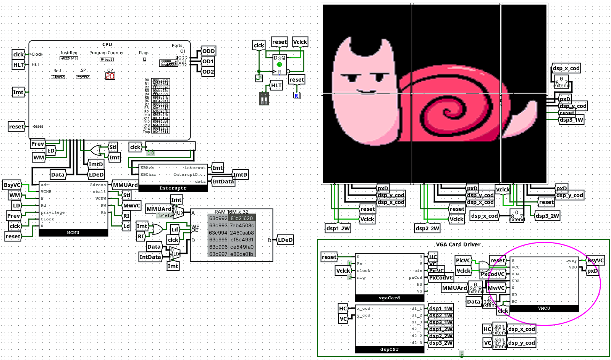

01. About Me
Self-taught systems developer with a passion for building foundational technology from the ground up. Coding since age 15, focusing on deep technical challenges including custom compiler backends, hardware architecture, and kernel development.
Currently pursuing a B.Tech in Computer Science Engineering (Aug 2024 - July 2028) at Pimpri Chinchwad University. (Current: 3rd Semester)
Professional Focus
- Systems Programming
- Compiler Design and LLVM backend work
- CPU architecture and emulator toolchains
- Kernel-level operating system development
Current Direction
- High-performance language tooling
- Hardware-software co-design experiments
- Agentic AI workflows and research automation
- Open-source system libraries and developer tooling
Check my Skills
02. Technical Arsenal
Languages
- Rust (Expert)
- C++ / C (Expert)
- Python (Expert)
- Go (Proficient)
- JavaScript (Proficient)
- Assembly (x86/Custom)
Systems & Low-Level
- LLVM Backend & Compilers
- Kernel Dev & Bootloaders
- VFS / Paging / PMM
- CPU Arch & ISA Design
- Lexical Analysis / Parsing
- Device Drivers (ATA/PCI)
Infrastructure & Tools
- Git & Version Control
- Docker & Containerization
- Agentic AI Architectures
- Flask & SocketIO
- FFmpeg / VidioPy
View My Projects
03. Featured Engineering
GigglyCode
A compiled systems language designed to bridge performance and flexibility, featuring recursive-descent parsing and robust type inference.
✨ Key Features
- Bridge Mechanism: Seamlessly embed Python and C code directly within the source.
- Ownership Model: Custom type system and ownership rules to prevent memory leaks.
- Advanced Features: Generic structs, function overloading via name mangling, and modules.
🛠️ Technical Deep Dive
Implements a full front-end (Lexer/Parser/Sema) and utilizes LLVM optimization passes to ensure native binaries are competitive with C++.
def add(a: int, b: int) -> int { return a + b; };TilekarOS
A monolithic 32-bit x86 operating system built from scratch to explore kernel-level resource management.
Current status: CLI-first experience with VGA TTY and keyboard-driven workflow.

✨ Key Features
- Kernel: Monolithic 32-bit x86 architecture with a custom bootloader.
- Memory Management: Implemented paging, bitmap-based physical memory management, and heap allocation.
- VFS: Virtual File System layer with FAT12 support and an extensible design.
- Device Drivers: Custom drivers for VGA (TTY), PS/2 Keyboard, and ATA (Hard Drive/CD-ROM).
- Dev Tooling: Python-based host-to-OS file synchronization and integrated debugging tools.
Berus Browser
A lightweight, from-scratch browser engine implemented without WebKit, Blink, or Gecko.

✨ Key Features
- Custom Parsers: Stateful HTML-to-DOM and CSS rule-set tokenizers built in Rust.
- Layout Engine: Handles CSS specificity, cascade, and complex text wrapping logic.
- Multimedia: Integrated audio playback using the rodio library for <audio> tags.
🛠️ Technical Deep Dive
Uses the egui framework for rendering the layout tree. Implements hand-coded logic for border-radius and block element positioning.
SS32 Architecture


A complete 32-bit computer system designed from the gate level up to the software toolchain.
✨ Key Features

Additional projects are available on my GitHub.
04. Get In Touch
I am always looking for opportunities to apply systems-level expertise to real-world challenges in compilers, kernel engineering, architecture design, and AI-integrated developer systems.
Send a Ping